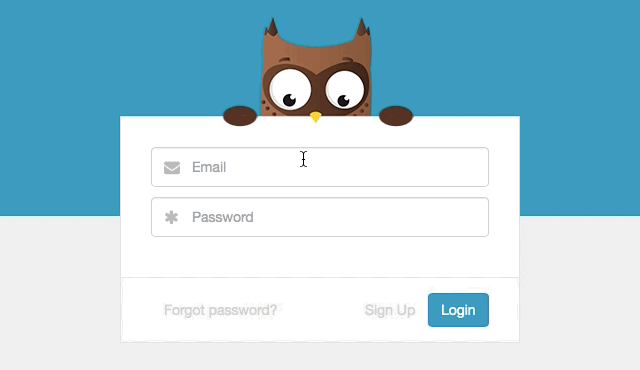
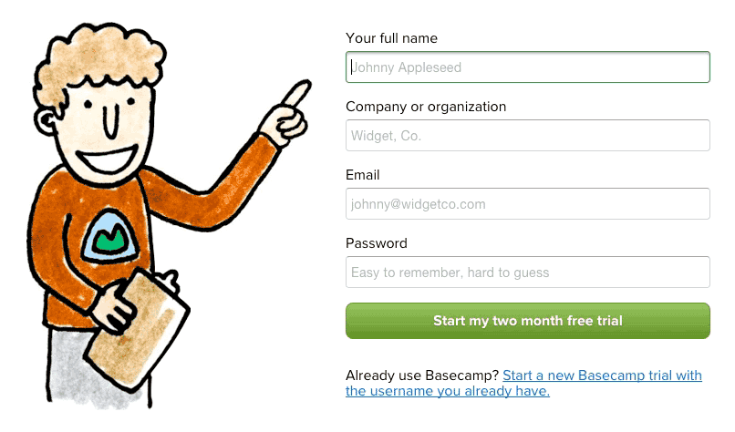
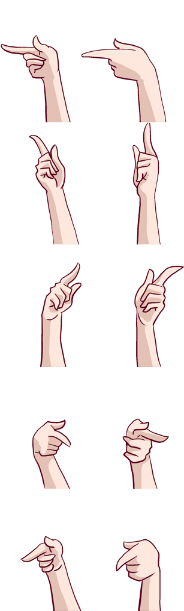

CSS之美
一些有趣的交互实例分享
吴梦圆 / @小雪-JoannaWomen Techmaker@Shanghai 2016.03.26

CSS Triangle
Login

try online

Result
Signup

Loading

Team

Key:
1. clip-path to draw the wall (chrome only)
2. CSS transitions to slowly move the scenery
3. Hover states for the two walls (and the "game over" screen)
Thank you
吴梦圆
- 阿里云 体验技术部 前端开发工程师
主页 / Github / Douban / @小雪-Joanna